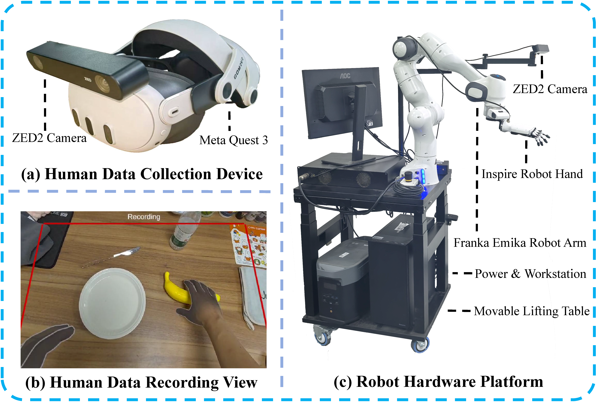
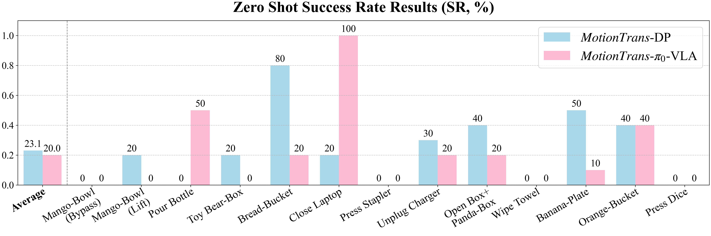
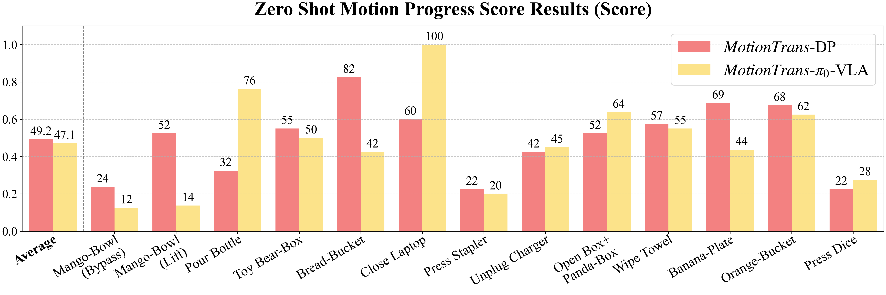

MotionTrans Human VR Data Enable Motion-Level Learning for Robotic Manipulation Policies
·
·
·
Scaling real robot data is a key bottleneck in imitation learning, leading to the use of auxiliary data for policy training. While other aspects of robotic manipulation such as image or language understanding may be learned from internet-based datasets, acquiring motion knowledge remains challenging. Human data, with its rich diversity of manipulation behaviors, offers a valuable resource for this purpose. While previous works show that using human data can bring benefits, such as improving robustness and training efficiency, it remains unclear whether it can realize its greatest advantage: enabling robot policies to directly learn new motions for task completion. In this paper, we systematically explore this potential through multi-task human-robot cotraining. We introduce MotionTrans, a framework that includes a data collection system, a human data transformation pipeline, and a weighted cotraining strategy. By cotraining 30 human-robot tasks simultaneously, we directly transfer more than 10 motions from human data to deployable end-to-end robot policies. Notably, 9 tasks achieve non-trivial success rates in zero-shot manner. MotionTrans also significantly enhances pretraining-finetuning performance (+40% success rate). Through ablation study, we identify key factors for successful motion learning: cotraining with robot data. These findings unlock the potential of motion-level learning from human data, offering insights into its effective use for training robotic manipulation policies. All data, code, and model weights will be open-sourced.

We synchronize VR headset/controllers and multi-view cameras to capture 3D hand trajectories, egocentric video, and robot state with precise time alignment.
During collection we log hand keypoints, egocentric observations, and textual annotations under a unified clock, making downstream alignment and training straightforward.
We collected 3,213 demonstrations across 15 human tasks and 15 robot tasks in 10+ real-world scenes. Tasks are grouped by motion-similar skill categories to support cross-embodiment (Human→Robot) co-training and transfer.


This chart presents the Zero Shot Success Rate (SR) results for various tasks. The comparison between MotionTrans-DP (blue) and MotionTrans-π0-VLA (pink) is shown across 16 different tasks.

The chart here shows the Zero Shot Motion Progress Score (Score) for the same tasks, highlighting how both methods, MotionTrans-DP (red) and MotionTrans-π0-VLA (yellow), perform across various actions.
@article{qiu2025-humanpolicy,
title={Humanoid Policy \~{} Human Policy},
author={Ri-Zhao Qiu and Shiqi Yang and Xuxin Cheng and Chaitanya Chawla and Jialong Li and Tairan He and Ge Yan and David J. Yoon and Ryan Hoque and Lars Paulsen and Ge Yang and Jian Zhang and Sha Yi and Guanya Shi and Xiaolong Wang},
journal={arXiv preprint arXiv:2503.13441},
year={2025}
}